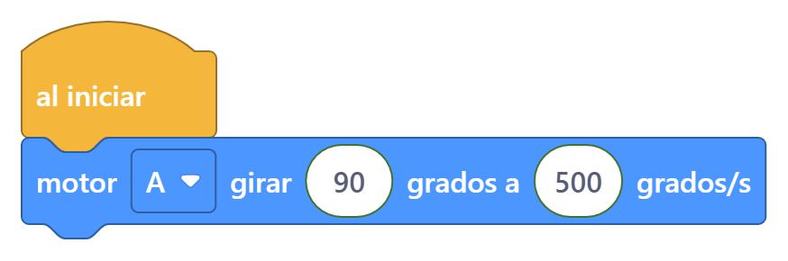
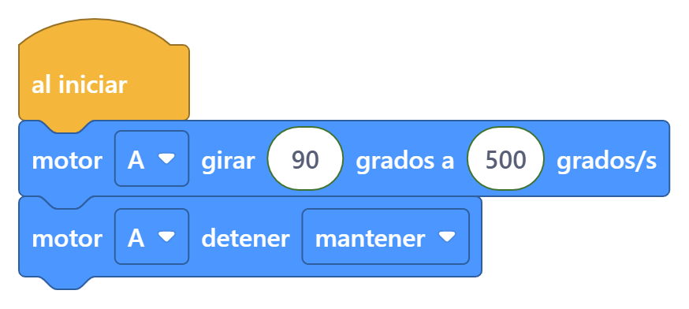
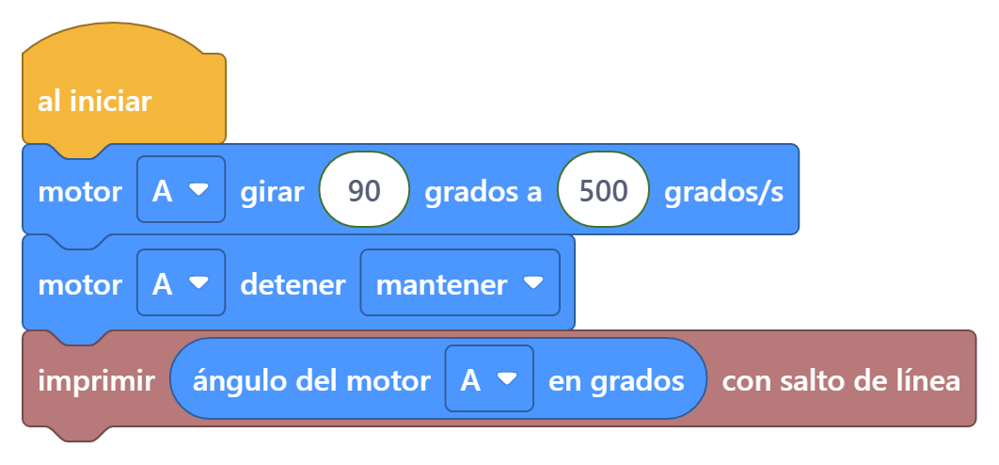

6 · LEGO SPIKE Prime
6.1 Motor por grados
Lo que vas a aprender
Haz que el motor dé un cuarto de vuelta y se quede en su lugar.
Qué necesitas
- Hub SPIKE Prime con Pybricks instalado y batería cargada.
- Computadora con Bluetooth y GreyForge.
- Motor LEGO compatible y una pieza para marcar su eje.
| Componente o señal | Conecta a |
|---|---|
| Cable del motor LEGO | A |
Pasos
Las imágenes muestran el programa del SPIKE Prime.
-
Conecta el motor
Prepara tu SPIKE Prime siguiendo SPIKE y EV3. Pon el motor en el puerto A y deja su eje libre.
-
Programa el giro
Debajo de «al iniciar», encaja «motor A girar 90 grados a 500 grados/s» de SPIKE · Motores.
Al iniciar, el motor A gira 90 grados a 500 grados por segundo. 
-
Mantén la posición
Debajo del giro, pon «motor A detener mantener» de SPIKE · Motores.
El motor A gira 90 grados y se detiene manteniendo la posición. 
-
Imprime el ángulo
Debajo de la detención, pon «imprimir … con salto de línea» de Serie. En su entrada encaja «ángulo del motor A en grados» de SPIKE · Motores.
El motor A gira 90 grados, mantiene la posición y su ángulo se imprime en el Monitor. 
-
Carga y prueba
Usa Conectar hub y pulsa Cargar. Comprueba que el motor gira un cuarto de vuelta.
Al iniciar, el motor A gira 90 grados, se detiene manteniendo la posición e imprime el ángulo. 
¿Prefieres no armarlo? Descarga el proyecto terminado
Pruébalo
Pon una marca en el eje y mira un giro de un cuarto de vuelta. Observa la salida en Monitor por Bluetooth.
¿Cómo funciona?
Los grados indican cuánto gira el eje. El motor mide su posición y el modo de detener del ejemplo la sostiene al terminar.
Ver el código (opcional)
También puedes ver el código al abrir el proyecto en GreyForge y elegir Código.
Si algo falla
- Si no se movió, revisa que el cable del motor esté en A y que el hub haya ejecutado el programa.
- Si te perdiste la única impresión, abre la salida antes de ejecutar otra vez.
Retos
Reto 6.1.A
Haz media vuelta.
Pista
Usa 180 grados.
Reto 6.1.B
Gira al otro lado.
Pista
Cambia el ángulo a −90.
Descargar proyecto
Abre el archivo .blocks.json en GreyForge con Archivo → Abrir.
Esta lección no tiene proyecto para la tarjeta seleccionada.
Descargar proyecto